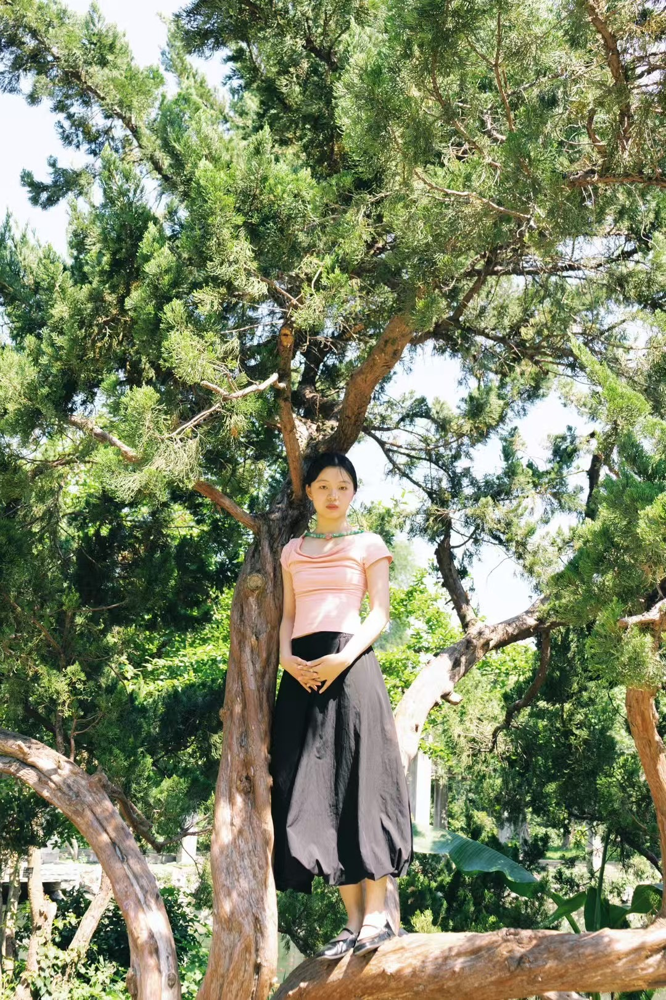

Exploring Human-Computer Interaction
with a background in language, research, and product operations
About
BA in English Language & Literature
My academic journey began with language, literature, and the ways people express themselves. Through literary and linguistic research, I developed an interest in how language shapes understanding, relationships, and social perceptions.
Moving beyond the study of language, I began exploring how people interact with technology in everyday life. My experience in product operations introduced me to information architecture, user needs, and the challenges of making complex products easier to understand and use.
I observe. I question. I rethink.
I pay attention to details people often overlook — a confusing interaction, an unspoken expectation, or a barrier hidden in an ordinary experience. I enjoy connecting ideas and looking at problems from different perspectives.
I enjoy turning observations into ideas and ideas into tangible forms. Through research, writing, visual exploration, and prototyping, I explore different ways to understand problems and communicate possible solutions.
Human-Computer Interaction
I hope to bring together my background in language, research, and product experience to create technology that is more thoughtful, inclusive, and responsive to people's everyday needs.